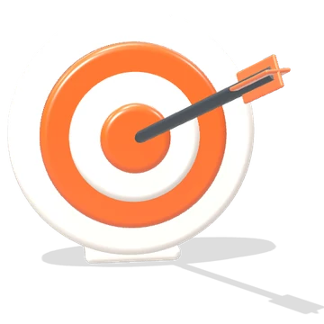
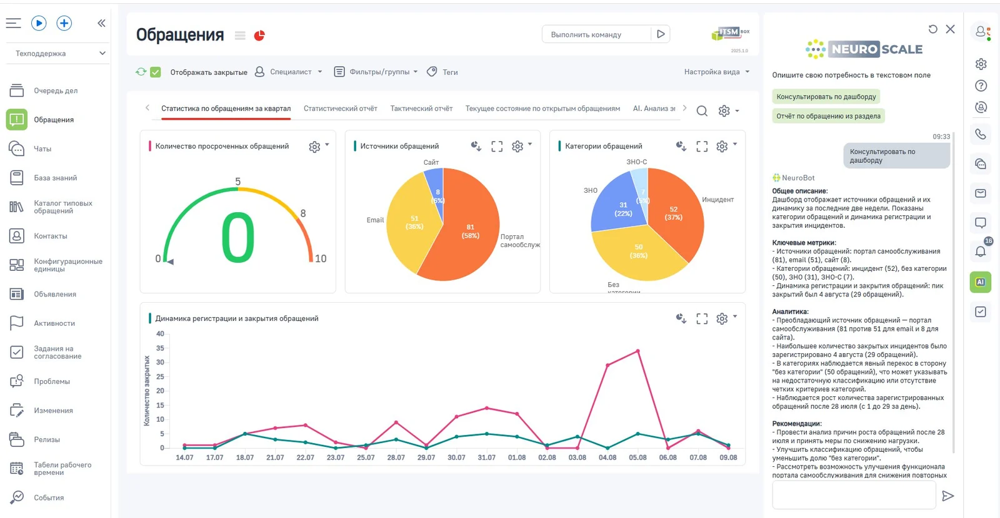
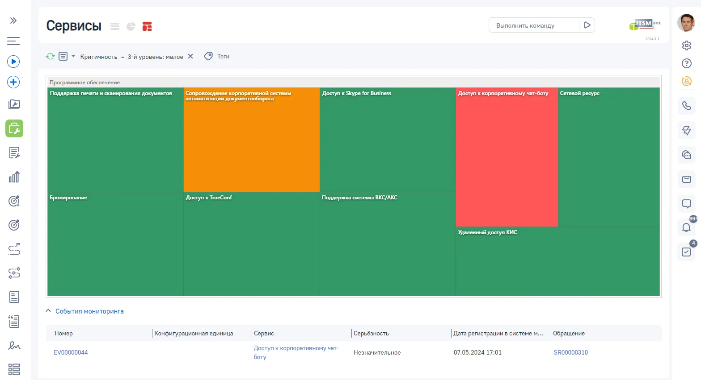
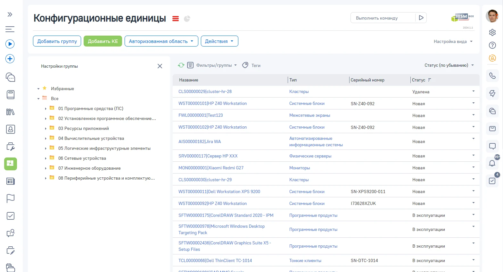
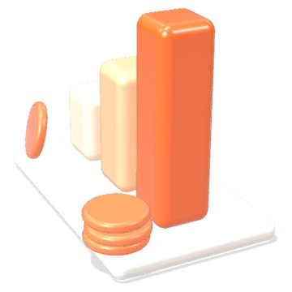
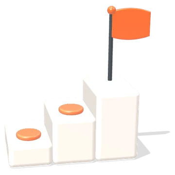
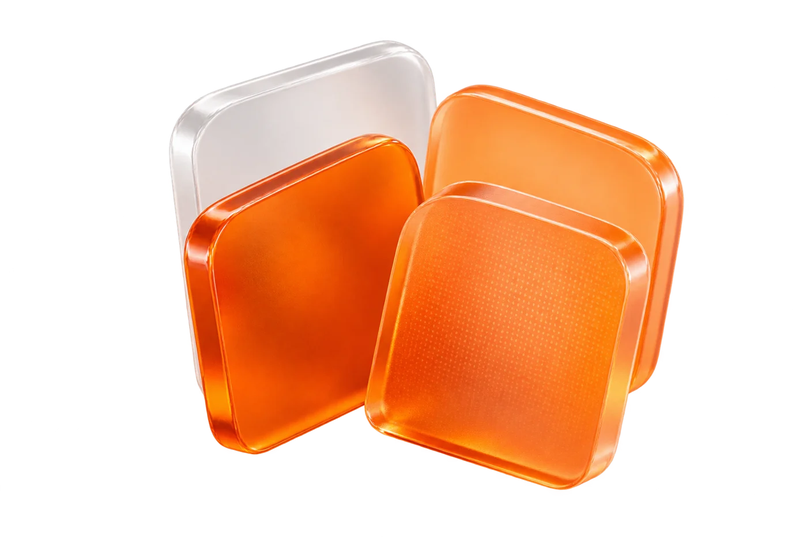

Интеллектуальная обработка обращений
Автоматическая классификация, оценка приоритета и критичности, маршрутизация по компетенциям специалистов. Выявление массовых сбоев и автоматическая обработка типовых запросов без участия инженера.
От Service Desk до управления ИТ‑услугами, активами и конфигурациями на единой AI‑driven low‑code‑платформе

Собирайте обращения в одном окне, автоматизируйте поддержку и контролируйте заявки

Управляйте ИТ‑услугами, контролируйте качество сервиса и сроки обслуживания, устраняйте причины повторяющихся сбоев

Поддерживайте актуальную картину ИТ‑инфраструктуры, контролируйте оборудование и ПО, связи между компонентами и ИТ‑услугами

Планируйте проекты и ресурсы, контролируйте затраты, обеспечивая непрерывность ИТ‑услуг
Не знаете, с чего начать? Подберём набор модулей под зрелость вашей ИТ‑службы.
Подобрать модулиИИ помогает быстрее обрабатывать обращения, находить решения и планировать работу поддержки. Закрытый контур и аудит действий обеспечивают контроль над использованием технологий.

Автоматическая классификация, оценка приоритета и критичности, маршрутизация по компетенциям специалистов. Выявление массовых сбоев и автоматическая обработка типовых запросов без участия инженера.
Поиск ответов в базе знаний, рекомендации по решению обращений и помощь в работе с регламентами. Краткое изложение переписок, истории инцидентов и документов.

Анализ потока обращений для планирования смен, численности специалистов и распределения ресурсов.

Конструктор для создания агентов поддержки и ИТ‑процессов без программирования. Журналирование решений и действий для контроля и аудита.
ITSMBox объединяет экспертизу IT Expert в управлении ИТ‑услугами и возможности одной из ведущих российских low‑code‑платформ BPMSoft.
Эксперт в управлении ИТ‑услугами и цифровой трансформации
Одна из компаний, стоявших у истоков российской школы ITSM. IT Expert развивает практики управления ИТ‑услугами, обучает специалистов и помогает компаниям выстраивать эффективные ИТ‑процессы.
Первый российский учебный центр, получивший аккредитацию PEOPLECERT по ITIL 4
Одна из ведущих российских платформ на рынке CRM, BPM и low‑code
Технологическая основа для автоматизации бизнес-процессов и создания корпоративных приложений. Платформа объединяет инструменты управления процессами, разработки и искусственного интеллекта.
1‑е место в рейтингах российских CRM, BPM/BPMS и low‑code‑платформ в 2026 году
Базовые процессы управления ИТ‑услугами уже настроены. Их можно использовать сразу и адаптировать под структуру и задачи компании.
Автоматическая классификация и маршрутизация обращений, рекомендации по решению инцидентов, выявление массовых сбоев и прогнозирование нагрузки.
Low‑code/no‑code‑инструменты позволяют менять карточки, маршруты согласования, SLA, правила и аналитику без разработки с нуля.
Встроенный редактор помогает описывать, настраивать и совершенствовать процессы в единой нотации, понятной ИТ‑специалистам и бизнесу.
ITSMBox можно развернуть в облаке или в контуре компании. Архитектура позволяет масштабировать систему по мере роста числа пользователей и обращений.
40 крупных компаний, май — июнь 2026 года. Сравните свою ИТ‑службу с рынком и выберите следующий шаг развития.
Наличие ITSM‑системы ещё не говорит о зрелости. ITSMBox проходит с ИТ‑службой весь этот путь: от Service Desk до CMDB, интеграций и ИИ.
От управления критически важными ИТ‑системами до автоматизации Service Desk и обслуживания объектов. Посмотрите, как компании решают задачи поддержки, управления обращениями и эксплуатации с помощью BPMSoft.
Перевели критически важную ITSM‑систему «СИРИУС» на BPMSoft без остановки её работы. Сохранили накопленные данные, настройки, бизнес-процессы и интеграции.
Подробнее о проектеПеревели обработку сервисных заявок с иностранной системы на BPMSoft. Объединили регистрацию, маршрутизацию, согласование и исполнение обращений в едином контуре. Настроили каталог сервисов с готовыми шаблонами для разных категорий заявок.
Результат: прозрачная обработка обращений, единая история обслуживания и сокращение трудозатрат специалистов технической поддержки.
Подробнее о проектеПеревели регистрацию и обработку заявок из бумажных журналов в BPMSoft. Реализовали подачу обращений по QR-кодам с привязкой к конкретной локации, назначение исполнителей и контроль сроков по SLA.
Результат: единый процесс обработки заявок, контроль исполнения работ и автоматическое уведомление ответственных при нарушении сроков.
Подробнее о проектеITSMBox занял первое место среди облачных и локальных ITSM‑систем по версии CIO‑Navigator. В рейтинге локальных систем сравнивали 20 решений по 50+ критериям.
За 2023–2025 годы. Только в 2025‑м проекты на BPMSoft получили 10 наград, а всего на конкурс подали 630 проектов.
Аналитический рейтинг российских ITSM‑систем журнала «Компьютерра».
Первый ITSM‑рейтинг CNews Analytics. Выручка BPMSoft от ITSM‑лицензий за 2025 год — 1,016 млрд ₽.
«Лучшее решение для автоматизации ИТ‑процессов» — ИТ4ИТ в «Газпром нефти» на ITSMBox, проект IT Expert. «Лучший проект в области цифровизации сервис-менеджмента» — «Зарубежнефть» на BPMSoft.
«Лучший проект по управлению ИТ» — автоматизация управления сервисами в ТМК на ITSMBox, проект IT Expert.
Проведём демонстрацию, ответим на вопросы по ИБ и КИИ и подберём модули под задачи вашей ИТ‑службы.
